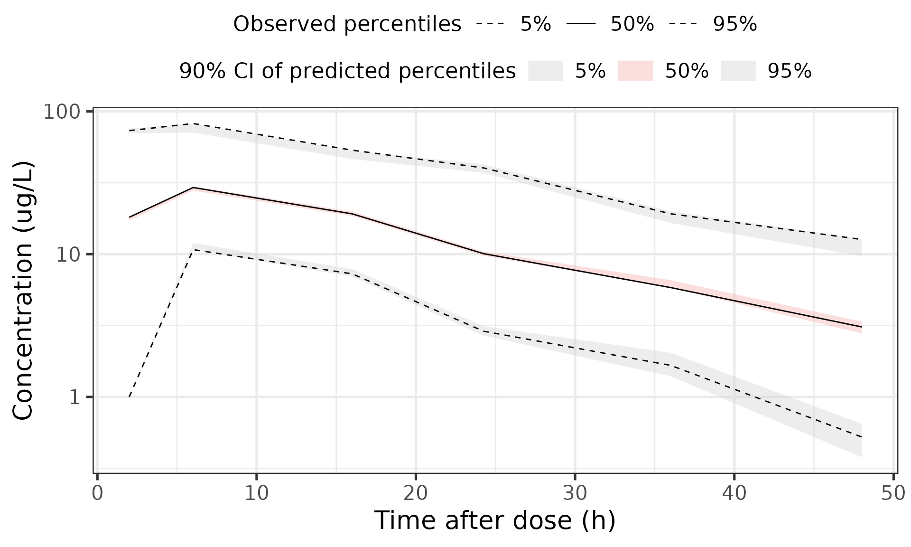
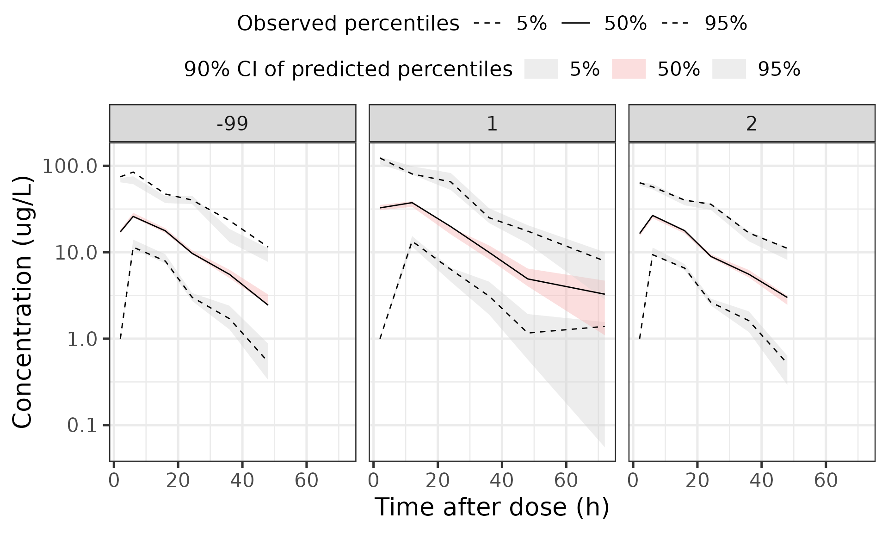

Create VPCs for a FREM model
Joakim Nyberg and Niclas Jonsson
vpc_for_a_FREM_model.Rmd
suppressPackageStartupMessages(library(PMXFrem))
suppressPackageStartupMessages(library(pmxvpc))
#> Warning: replacing previous import 'data.table::last' by 'dplyr::last' when
#> loading 'pmxvpc'
#> Warning: replacing previous import 'data.table::first' by 'dplyr::first' when
#> loading 'pmxvpc'
#> Warning: replacing previous import 'data.table::between' by 'dplyr::between'
#> when loading 'pmxvpc'
suppressPackageStartupMessages(library(ggplot2))
suppressPackageStartupMessages(library(data.table))
suppressPackageStartupMessages(library(magrittr))
suppressPackageStartupMessages(library(dplyr))
theme_set(ggplot2::theme_bw(base_size=20))Introduction
Just like with any other model it is important to check that FREM models satisfy basic diagnostic tests, for example visual predictive checks). Unlike standard models, it is not possible to use a FREM model to simulate data that reflects the impact of the covariates. Instead it is necessary to convert the model to an FFEM model and use that for simulations.
Create the FFEM model
Create the FFEM model for the set of covariates to include in the model to be evaluated.Consult the companion vignette on how to set up the FFEM model.
Use the FFEM model to simulate data for the VPC by adding something like this to the model file (define REPI=IREP in $ERROR):
$SIMULATION (1413) ONLYSIM NSUB=50
$TABLE REPI ID TAD DV
NOPRINT NOAPPEND ONEHEADERALL FILE=vpctab
modDevDir <- system.file("extdata/SimNeb",package="PMXFrem")
dataFile <- system.file("extdata/SimNeb/DAT-2-MI-PMX-2-onlyTYPE2-new.csv",package="PMXFrem")
runno <- 31
dataFileName <- "DAT-2-MI-PMX-2-onlyTYPE2-new.csv"
VPCdata <- paste0("vpctab",runno)
odata <- fread(file.path(modDevDir,dataFileName),check.names = T)
sdata <- fread(file.path(modDevDir,VPCdata),check.names = T,skip=1) %>%
mutate(EVID = rep(odata$EVID,50)) %>%
mutate(GENO2 = rep(odata$GENO2,50))
odata <- odata %>% filter(EVID!=1)
sdata <- sdata %>% filter(EVID!=1)Use ´pmxvpc` to generate the VPCs.
vpc1 <- observed(odata, x = TAD, yobs = LNDV, logDV = TRUE) %>%
simulated(sdata, ysim = DV) %>%
censoring(blq = ifelse(BLQ==1,T,F),lloq= -2.3) %>%
binning(bin = "fisher", nbins = 6) %>%
vpcstats(qpred = c(0.05, 0.5, 0.95), conf.level = 0.9)
vpcplot(vpc1,
show.points = F,
legend.position = "top",
facet.scales = "fixed",
xlab = "Time after dose (h)",
ylab = "Concentration (ug/L)",
show.boundaries = FALSE,
logy = TRUE,
smooth = T)
And with stratification.
vpc2 <- observed(odata, x = TAD, yobs = LNDV, logDV = TRUE) %>%
simulated(sdata, ysim = DV) %>%
censoring(blq = ifelse(BLQ==1,T,F),lloq= -2.3) %>%
stratify(~GENO2) %>%
binning(bin = "fisher", nbins = 6) %>%
vpcstats(qpred = c(0.05, 0.5, 0.95), conf.level = 0.9)
vpcplot(vpc2,
show.points = F,
legend.position = "top",
facet.scales = "fixed",
xlab = "Time after dose (h)",
ylab = "Concentration (ug/L)",
show.boundaries = FALSE,
logy = TRUE,
smooth = T)